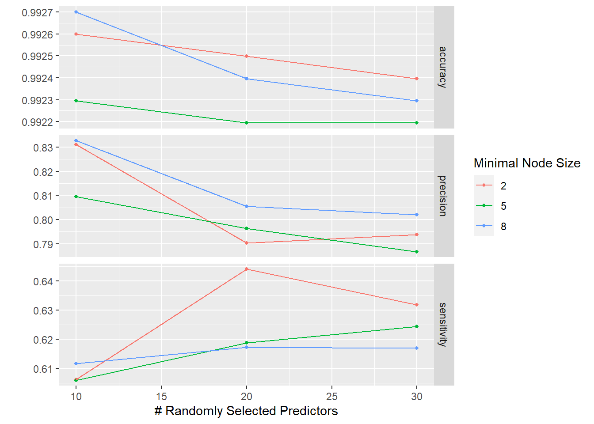
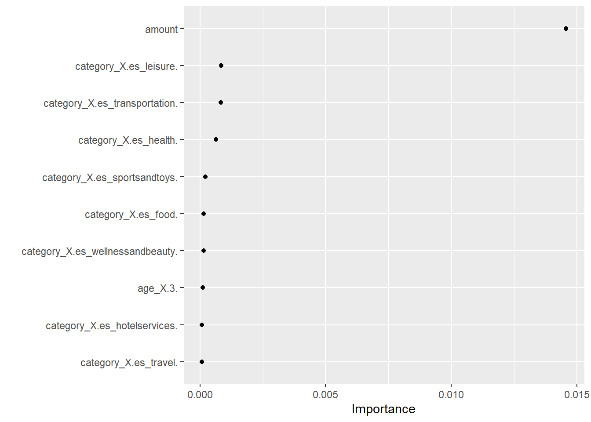

Código
# Carga de paquetes necesarios
knitr::opts_chunk$set(echo = TRUE)
knitr::opts_chunk$set(message = FALSE)
knitr::opts_chunk$set(warning = FALSE)
library(tidyverse)
library(discrim)
library(tidymodels)
library(workflows)Trabajo Práctico n°3
Carga de las librerias necesarias
# Carga de paquetes necesarios
knitr::opts_chunk$set(echo = TRUE)
knitr::opts_chunk$set(message = FALSE)
knitr::opts_chunk$set(warning = FALSE)
library(tidyverse)
library(discrim)
library(tidymodels)
library(workflows)data <- read_csv('C:/Users/pamel/Desktop/PDA/ML/data/df_fraude.csv')
glimpse(data)Rows: 17,839
Columns: 10
$ step <dbl> 0, 0, 0, 0, 0, 0, 0, 0, 0, 0, 0, 0, 0, 0, 0, 0, 0, 0, 0, 0~
$ customer <chr> "'C60351691'", "'C1038996959'", "'C574062699'", "'C8308634~
$ age <chr> "'2'", "'2'", "'2'", "'6'", "'2'", "'4'", "'3'", "'4'", "'~
$ gender <chr> "'F'", "'M'", "'M'", "'M'", "'F'", "'M'", "'M'", "'F'", "'~
$ zipcodeOri <chr> "'28007'", "'28007'", "'28007'", "'28007'", "'28007'", "'2~
$ merchant <chr> "'M1823072687'", "'M348934600'", "'M348934600'", "'M182307~
$ zipMerchant <chr> "'28007'", "'28007'", "'28007'", "'28007'", "'28007'", "'2~
$ category <chr> "'es_transportation'", "'es_transportation'", "'es_transpo~
$ amount <dbl> 36.88, 31.32, 43.75, 14.20, 2.63, 50.90, 15.69, 14.36, 0.1~
$ fraud <dbl> 0, 0, 0, 0, 0, 0, 0, 0, 0, 0, 0, 0, 0, 0, 0, 0, 0, 0, 0, 0~Step: representa el día en que la transacción sucede. En total son 180 steps, por lo que la base de datos es por 6 meses.
Customer: representa el ID de la persona que inicia la transacción. Está formada con la letra C seguida por una secuencia unica de 10 numeros.
Age: esta variable se divide en intervalos de edad, comenzando de 0 a 6 y la letra U que significa Unknown. La edad es Unknow solo para las transacciones que tienen el mismo género que Enterprise. La codificación de los números es:
Gender: esta variable se codifica como F para Mujer, M para Hombre, E para Empresa y U para Unknown.
Merchant: esta variable representa la identificación única de la parte que recibe la transacción. Similar a la identificación del cliente, la secuencia está formada por la letra M, seguida de una serie de 9 números. Hay un total de 50 comerciantes únicos en el conjunto de datos.
Category: hay 15 categorías únicas que etiquetan el tipo general de transacción: transporte, comida, salud, bienestar y belleza, moda, bares y restaurantes, hiper, deportes y juguetes, tecnología, hogar, servicios de hotel, otros servicios, contenidos, viajes, ocio.
Amount: representa el valor de la transacción. Solo hay 52 valores iguales a 0 y ningún valor negativo.
Fraud: una columna indicadora codificada con 0 si la transacción fue limpia y con 1 si la transacción fue fraudulenta.
zipcodeOri y zipMerchant: contienen un valor constante de 28007, que es un código postal en Ansonville, Carolina del Norte, Estados Unidos.
df <- data |>
select ("gender", "amount", "fraud", "category", "age")|>
filter(age!="'U'" & category != c("'es_transportation'", "'es_food'", "'es_health'"))df$fraud <- as.factor(df$fraud)
df$age <- as.factor(df$age)
df$gender <- as.factor(df$gender)
df$category <- as.factor(df$category)
glimpse (df)Rows: 12,331
Columns: 5
$ gender <fct> 'M', 'M', 'F', 'M', 'F', 'F', 'F', 'F', 'F', 'M', 'F', 'M', '~
$ amount <dbl> 31.32, 43.75, 2.63, 50.90, 14.36, 0.10, 44.31, 9.17, 54.83, 9~
$ fraud <fct> 0, 0, 0, 0, 0, 0, 0, 0, 0, 0, 0, 0, 0, 0, 0, 0, 0, 0, 0, 0, 0~
$ category <fct> 'es_transportation', 'es_transportation', 'es_transportation'~
$ age <fct> '2', '2', '2', '4', '4', '3', '2', '3', '3', '5', '4', '2', '~Para una correcta interpretación de nuestros resultados vamos a especificar que 1 es nuestra clase positiva (cliente quiere contratar un seguro)
df$fraud <- relevel(df$fraud, ref = "1")
levels(df$fraud)[1] "1" "0"
set.seed(456)#setear la semilla
# Create data split for train and test
df_split <- initial_split(df,
prop = 0.8,
strata = fraud)# para conservar la proporción de clases
# Create training data
df_train <- df_split %>%
training()
# Create testing data
df_test <- df_split %>%
testing()
# Number of rows in train and test dataset
paste0("Total del dataset de entrenamiento: ", nrow(df_train))[1] "Total del dataset de entrenamiento: 9864"paste0("Total del dataset de testeo: ", nrow(df_test))[1] "Total del dataset de testeo: 2467"TidymodelsSi no tenés instalado
tidymodelspodés hacerlo corriendo el siguiente código
install.packages("tidymodels")Al igual que tidyverse, tidymodels está compuesto por un conjunto de paquetes como los siguientes:
rsample: para realizar la división del dataset en entrenamiento, validación y testeo.
recipes: para el preprocesamiento
parnship: para especificar el modelo
yardstick: para evaluar el modelo
Mayores especificaciones y ejemplos de uso de tidymodels, en su página
reciperecipe_df <- recipe (fraud ~ ., data= df_train) |>
step_scale(all_numeric_predictors(), -all_outcomes()) |>
step_dummy(all_nominal_predictors()) |>
prep()
# Bake
df_train <- bake(recipe_df, new_data=df_train)
df_test <- bake(recipe_df, new_data=df_test)Se puede entrenar cualquier modelo (que este incluído en tidymodels) siguiendo los pasos que se muestran a continuación.
1- Especificar el modelo (eg. Regresión logística, Random Forest, SVM, etc)
2- Con set_engine() se especifíca la familia de modelos
3- Con set_mode() se especifica el tipo de modelo a entrenarse (regresión o clasificación)
4- Usar la función fit () para entrenar el modelo y, dentro de eso, debe proporcionar la notación de la fórmula y el conjunto de datos
##Con los hiperparámetros por default
#Naive Bayes
set.seed(234)
model_NB <- naive_Bayes(smoothness = .8) |>
set_mode("classification") |>
set_engine("naivebayes")
#Random Forest
set.seed(234)
model_RF <- rand_forest() |>
set_engine("ranger") |>
set_mode("classification") Con tune, se especifica qué hiperparámetros van a ser tuneados.
#Random forest con validacion cruzada
set.seed(234)
model_RF <- rand_forest(mtry = tune(),
min_n = tune(),
trees = 100) |>
set_mode("classification")wf_RF <- workflow() |>
add_recipe(recipe_df) |>
add_model(model_RF)
wf_RF== Workflow ====================================================================
Preprocessor: Recipe
Model: rand_forest()
-- Preprocessor ----------------------------------------------------------------
2 Recipe Steps
* step_scale()
* step_dummy()
-- Model -----------------------------------------------------------------------
Random Forest Model Specification (classification)
Main Arguments:
mtry = tune()
trees = 100
min_n = tune()
Computational engine: ranger 
set.seed(1234)
fold_df <- vfold_cv(df_train, v=5)
fold_df$splits[[1]]
<Analysis/Assess/Total>
<7891/1973/9864>
[[2]]
<Analysis/Assess/Total>
<7891/1973/9864>
[[3]]
<Analysis/Assess/Total>
<7891/1973/9864>
[[4]]
<Analysis/Assess/Total>
<7891/1973/9864>
[[5]]
<Analysis/Assess/Total>
<7892/1972/9864>Necesitamos un conjunto de posibles valores de parámetros para probar el árbol de decisión.
param_grid <- grid_regular(mtry(range = c(10, 30)),
min_n(range = c(2, 8)))
param_grid# A tibble: 9 x 2
mtry min_n
<int> <int>
1 10 2
2 20 2
3 30 2
4 10 5
5 20 5
6 30 5
7 10 8
8 20 8
9 30 8doParallel::registerDoParallel() #paralelizamos los cálculos
tune_DF <- tune_grid(
model_RF,
fraud~ .,
resamples = fold_df,
grid = param_grid,
metrics = metric_set(accuracy, sensitivity, precision)
)Las métricas provienen del rendimiento de la validación cruzada a través de los diferentes valores de los parámetros.
collect_metrics(tune_DF)# A tibble: 27 x 8
mtry min_n .metric .estimator mean n std_err .config
<int> <int> <chr> <chr> <dbl> <int> <dbl> <chr>
1 10 2 accuracy binary 0.993 5 0.000591 Preprocessor1_Model1
2 10 2 precision binary 0.831 5 0.0417 Preprocessor1_Model1
3 10 2 sensitivity binary 0.606 5 0.0344 Preprocessor1_Model1
4 20 2 accuracy binary 0.992 5 0.000706 Preprocessor1_Model2
5 20 2 precision binary 0.790 5 0.0429 Preprocessor1_Model2
6 20 2 sensitivity binary 0.644 5 0.0458 Preprocessor1_Model2
7 30 2 accuracy binary 0.992 5 0.00103 Preprocessor1_Model3
8 30 2 precision binary 0.794 5 0.0612 Preprocessor1_Model3
9 30 2 sensitivity binary 0.632 5 0.0462 Preprocessor1_Model3
10 10 5 accuracy binary 0.992 5 0.000586 Preprocessor1_Model4
# i 17 more rowsautoplot(tune_DF)
param_final <- tune_DF |>
select_best(metric = "precision")
param_final# A tibble: 1 x 3
mtry min_n .config
<int> <int> <chr>
1 10 8 Preprocessor1_Model7wf_RF <- wf_RF |>
finalize_workflow(param_final)
wf_RF== Workflow ====================================================================
Preprocessor: Recipe
Model: rand_forest()
-- Preprocessor ----------------------------------------------------------------
2 Recipe Steps
* step_scale()
* step_dummy()
-- Model -----------------------------------------------------------------------
Random Forest Model Specification (classification)
Main Arguments:
mtry = 10
trees = 100
min_n = 8
Computational engine: ranger A continuación, se ajusta el flujo de trabajo del modelo final a los datos de entrenamiento y se evalúa el rendimiento en los datos de testeo.
La función ´last_fit()´ ajuta el flujo de trabajo a los datos de entrenamiento y generará predicciones sobre los datos de prueba según lo define nuestro objeto churn_split.
dt_fit <- wf_RF |>
# fit on the training set and evaluate on test set
last_fit(df_split, metrics = metric_set(precision))
dt_fit# Resampling results
# Manual resampling
# A tibble: 1 x 6
splits id .metrics .notes .predictions .workflow
<list> <chr> <list> <list> <list> <list>
1 <split [9864/2467]> train/test split <tibble> <tibble> <tibble> <workflow>test_performance <- dt_fit |> collect_metrics()
test_performance# A tibble: 1 x 4
.metric .estimator .estimate .config
<chr> <chr> <dbl> <chr>
1 precision binary 0.929 Preprocessor1_Model1collect_predictions(dt_fit) |>
conf_mat(fraud, .pred_class) Truth
Prediction 1 0
1 26 2
0 11 2428final_RF <- extract_workflow(dt_fit)
final_RF== Workflow [trained] ==========================================================
Preprocessor: Recipe
Model: rand_forest()
-- Preprocessor ----------------------------------------------------------------
2 Recipe Steps
* step_scale()
* step_dummy()
-- Model -----------------------------------------------------------------------
Ranger result
Call:
ranger::ranger(x = maybe_data_frame(x), y = y, mtry = min_cols(~10L, x), num.trees = ~100, min.node.size = min_rows(~8L, x), num.threads = 1, verbose = FALSE, seed = sample.int(10^5, 1), probability = TRUE)
Type: Probability estimation
Number of trees: 100
Sample size: 9864
Number of independent variables: 23
Mtry: 10
Target node size: 8
Variable importance mode: none
Splitrule: gini
OOB prediction error (Brier s.): 0.006103459 best_precision <- select_best(tune_DF, "precision")
final_rf <- finalize_model(
model_RF,
best_precision
)library(vip)
final_rf %>%
set_engine("ranger", importance = "permutation") %>%
fit(fraud ~ .,
data = juice(recipe_df)
) %>%
vip(geom = "point")